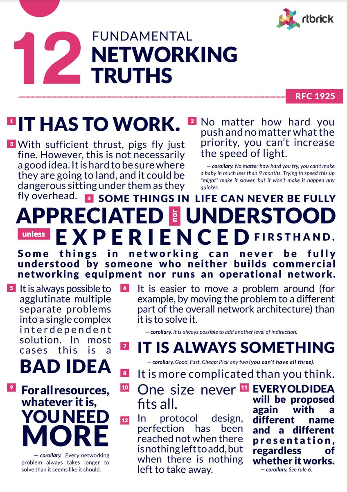

AnilKumar Srirangapatna Nagesh
Network Engineer | Learning to transform Broadband/Core Networks with AI, Machine Learning, and Agentic Solutions.
Bridging two decades of network engineering with a future in AI.

With nearly two decades of experience in the communications industry, I've focused my career on architecting and deploying the robust network solutions that underpin our digital world. My expertise lies in core routing protocols like BGP, OSPF, and MPLS, and I currently lead the development of Broadband Network Gateway (BNG) protocols at Calix Inc.
Recently, my curiosity has led me to the transformative potential of AI and machine learning in our field. This has marked a new chapter in my career, where I am embracing the role of a learner once again. I'm now exploring how to bridge my extensive networking background with the power of AI and am focused on the practical applications of machine learning within the networking domain. My goal is to leverage my experience to build innovative, AI-driven solutions for predictive analytics, anomaly detection, and intelligent automation.
This website is a living document of that journey—a place to share my projects, track my progress, and connect with others who are passionate about the future of networking.
Belief System
"Any fool can write code that a computer can understand. Good programmers write code that humans can understand."
- Martin Fowler
"The most fundamental problem in software development is complexity. There is only one basic way of dealing with complexity: divide and conquer."
- Bjarne Stroustrup
"Measuring programming progress by lines of code is like measuring aircraft building progress by weight."
- Bill Gates
"It's not at all important to get it right the first time. It's vitally important to get it right the last time.”
- Andrew Hunt and David Thomas
"The code you write makes you a programmer. The code you delete makes you a good one. The code you don't have to write makes you a great one."
- Mario Fusco
"Don't Repeat Yourself (DRY) is a fundamental principle in software development."
- Andrew Hunt and David Thomas
"Good judgement comes from experience, and experience comes from bad judgement."
- Fred Brooks
"Testing is not a phase, it's a way of life."
- Elisabeth Hendrickson
"Simple things should be simple, complex things should be possible."
- Alan Kay
"Before software can be reusable it first has to be usable."
- Ralph Johnson
RFC 1925: The Twelve Networking Truths That Still Haunt Us
Published by the Internet Order of Old Farts (IOOF) – because someone had to say it
It's been nearly 30 years since the IETF dropped a legendary piece of literature on us: RFC 1925 – The Twelve Networking Truths. Officially labeled an April 1st document, it has aged with alarming precision. Think of it as the networking version of the Ten Commandments, only with more NAT and fewer morals.
If you've ever fought a misbehaving BGP session with the intensity of a thousand suns, duct-taped your way through a routing "fix," or cried softly into your coffee mug that reads "It Has To Work" — you're not alone. This website is your safe space.
Let's decode these eternal truths with the reverence they command and the sarcasm they've rightfully earned through years of network battles.
The Twelve Commandments of "Why Is Nothing Working?"
Truth #1: "It Has To Work"
The most deceptively simple statement in networking. Yes, Karen from accounting, the internet should work. No, I can't explain why it doesn't when Mercury is in retrograde and someone microwaved fish in the break room.
Truth #2: "No matter how hard you push… you can't increase the speed of light"
Physics: the ultimate party pooper. No amount of executive pressure, urgent emails, or Red Bull will make your packets travel faster than 299,792,458 m/s. The corollary about babies is equally applicable to network rollouts – nine months minimum, and rushing it just makes everything worse.
Truth #3: "With sufficient thrust, pigs fly just fine"
Chef's kiss to this one. Yes, you can tunnel all your corporate traffic through DNS. You can run BGP over carrier pigeons. Yes, you can make IPv6 work with that legacy system from 1987. But should you? Well, that's between you and your therapist.
As one wise soul on Hacker News noted, this applies beautifully to corporate security solutions with "sufficient manpower and infosec mandate" – sure, your MITM proxy works, but now random applications are crashing and everyone's disabling HTTPS updates. The pigs are flying, but they're pooping on everything below.
Truth #4: "Some things… can never be fully understood"
Translation: "Please stop asking me to explain why your network is slow when you've never configured a VLAN in your life." There's a reason we have that thousand-yard stare – we've seen things. Terrible, beautiful, inexplicable things.
Truth #5: "It is always possible to aglutenate multiple separate problems"
Aglutenate – to glue together. Like creating a single, magnificent franken-solution that solves your DNS problem, your routing problem, your security problem, and your coffee shortage all at once. It's beautiful. Horrible. It's Tuesday.
Truth #6: "It is easier to move a problem around"
The networking equivalent of cleaning your room by shoving everything under the bed. Why fix the routing issue when you can just… use a different VLAN? Problem solved! (Terms and conditions apply; problem may reappear in a different subnet.)
Corollary 6a: "It is always possible to add another level of indirection"
The solution to every problem is another layer of abstraction. Can't reach the server? Add a load balancer. Load balancer not working? Add a proxy. Proxy having issues? Add a tunnel. Tunnel broken? Add a VPN. VPN slow? Add SD-WAN. SD-WAN… you get the idea.
Truth #7: "It is always something"
The networking professional's motto. It's never "nothing." There's always something. Usually DNS. Always DNS. Even when it's not DNS, it's DNS.
Corollary 7a: "Good, Fast, Cheap: Pick any two"
The eternal triangle of network engineering. Want it fast and cheap? It won't be good. Want it good and fast? Break out the corporate credit card. Want it good and cheap? See you next quarter.
Truth #8: "It is more complicated than you think"
Even when you think it's complicated, it's more complicated than that. That "simple" network refresh? It's touching 47 different systems, requires coordination with 12 teams, and somehow depends on a perl script from 2003 that nobody remembers writing.
Truth #9: "For all resources… you need more"
Bandwidth, RAM, CPU, coffee, patience, therapy. The answer is always "more." And when you get more, you'll need more of that too.
Corollary 9a: "Every networking problem always takes longer to solve"
That "five-minute fix"? It's now Thursday. The "quick reboot"? We're on day three. The "simple config change"? You've questioned your life choices and considered a career in organic farming.
Truth #10: "One size never fits all"
Despite what the vendor slides promise, their "revolutionary, industry-leading, paradigm-shifting" solution will not magically solve all your problems. It might solve some problems while creating exciting new ones!
Truth #11: "Every old idea will be proposed again"
Software-Defined Networking! It's totally different from… checks notes …the programmable network management systems from the 1980s. Protocol Buffers! Nothing like that old ASN.1 stuff that totally sucked (despite having all the same problems). The cloud! Which is definitely not just other people's servers that you rent monthly!
Truth #12: "Perfection has been reached not when there is nothing left to add, but when there is nothing left to take away"
The networking equivalent of Marie Kondo. Does that BGP route spark joy? No? Thank it for its service and send it to /dev/null.
The Modern Corollaries
While RFC 1925 is eternal, the networking world has gifted us some new truths:
- Truth #13: "It's always DNS" (until proven otherwise, then it's still probably DNS)
- Truth #14: "The problem is always in the other team's domain"
- Truth #15: "Have you tried turning it off and on again?" (This works more often than it should)
- Truth #16: "The network is never the problem" (but somehow you're always the one fixing it)
The Security Considerations
The original RFC states: "This RFC raises no security issues. However, security protocols are subject to the fundamental networking truths."
This is perhaps the most prophetic statement in the document. Every security protocol, every "zero-trust" architecture, every "next-generation" firewall – they all bow to the fundamental truths. Your fancy AI-powered security solution? It still can't go faster than light. Your blockchain-based authentication? It's still more complicated than you think.
References
"The references have been deleted in order to protect the guilty and avoid enriching the lawyers."
This line alone should have won awards. It's the networking equivalent of "No comment" – protecting the innocent (and the not-so-innocent) from the reality of how network engineering actually works.
Final Thoughts
RFC 1925 isn't just documentation – it's validation. It's the document that says, "Yes, this is as hard as you think it is. No, you're not crazy. Yes, everyone else is struggling too."
The next time someone asks why the network is slow, why the deployment is delayed, or why you're drinking coffee at 3 AM while staring at packet captures, just hand them RFC 1925. It explains everything and nothing, all at once.
And remember: It Has To Work.
Even when it doesn't.